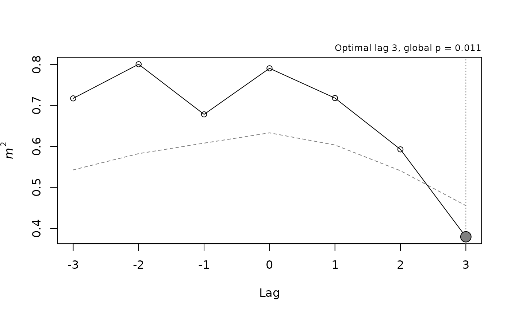

Example: seasonal liver plasticity in a treefrog
Source:vignettes/articles/liver-example.Rmd
liver-example.RmdThis article analyzes a real data set with
lagged_protest() and lagged_protest_pairs().
The question is whether seasonal changes in the liver of the treefrog
Dendropsophus minutus track climate within the same month or
with a delay, and whether hepatic modules lead one another.
The data
dminutus_liver holds monthly means of four hepatic
modules and of climate, from April 2016 to March 2017 [Franco-Belussi et al. (2026); see
?dminutus_liver for the variables]. Each element is a
matrix with 12 rows (months) and one column per variable. Climate
combines temperature, rainfall and humidity from BR-DWGD (Xavier et al. 2022), a drought index from
TerraClimate (Abatzoglou et al. 2018),
UV-B irradiance from glUV (Beckmann et al.
2014) and photoperiod.
sapply(dminutus_liver, dim)
#> Somatic Histochemistry Morphometry Density Climate
#> [1,] 12 12 12 12 12
#> [2,] 4 4 5 4 7The series span exactly one annual cycle, so the phase and cyclic
schemes, which treat the series as periodic with period n,
apply without truncation (period is not needed). With 12
time points, the power to detect a lag is limited, and strong
autocorrelation would make the phase scheme somewhat liberal (see Choosing a permutation scheme); the
cyclic scheme is used below as a conservative check.
Contemporaneous concordance
Concordance within the same month is the lag-0 PROTEST for every pair
of data sets. With a single lag, the global p-value equals the raw one,
and lagged_protest_pairs() adjusts it across the ten pairs
(Benjamini–Hochberg by default):
lag0 <- lagged_protest_pairs(dminutus_liver, lags = 0, bidirectional = FALSE,
nperm = 9999, seed = 1)
knitr::kable(lag0[, c("x", "y", "m2", "r", "p.value", "p.global.adjusted")],
digits = 3)| x | y | m2 | r | p.value | p.global.adjusted |
|---|---|---|---|---|---|
| Somatic | Histochemistry | 0.711 | 0.538 | 0.092 | 0.255 |
| Somatic | Morphometry | 0.815 | 0.430 | 0.374 | 0.623 |
| Somatic | Density | 0.609 | 0.625 | 0.102 | 0.255 |
| Somatic | Climate | 0.477 | 0.724 | 0.004 | 0.046 |
| Histochemistry | Morphometry | 0.806 | 0.440 | 0.609 | 0.751 |
| Histochemistry | Density | 0.704 | 0.544 | 0.190 | 0.381 |
| Histochemistry | Climate | 0.791 | 0.457 | 0.743 | 0.751 |
| Morphometry | Density | 0.755 | 0.495 | 0.558 | 0.751 |
| Morphometry | Climate | 0.772 | 0.478 | 0.751 | 0.751 |
| Density | Climate | 0.378 | 0.789 | 0.099 | 0.255 |
Somatic indices and climate were the only pair concordant after the adjustment. Density and climate had the lowest m², yet this concordance was not distinguishable from that expected between independent seasonal series, which illustrates why a low m² alone is not evidence of association.
Lagged concordance
The hypothesized hierarchy has seven directed edges: climate to each
of the four modules, and three links between modules. Each edge is
scanned from −3 to +3 months, so a positive lag means that the first
data set leads the second. The global p-value accounts for the scan
within each edge; the edges are then adjusted within two families of
hypotheses, because the four climate edges ask whether each module
responds to the same driver, whereas the biological edges ask a
different question. This section uses the smallest m² as the
scan statistic (stat = "raw"), as in the analysis of these
data submitted for publication; the next section compares it with the
current default, stat = "minP":
climate_edges <- list(c("Climate", "Histochemistry"),
c("Climate", "Morphometry"),
c("Climate", "Density"),
c("Climate", "Somatic"))
module_edges <- list(c("Histochemistry", "Morphometry"),
c("Morphometry", "Density"),
c("Density", "Somatic"))
climate <- lagged_protest_pairs(dminutus_liver, pairs = climate_edges,
lags = 0:3, nperm = 9999, seed = 1,
stat = "raw")
modules <- lagged_protest_pairs(dminutus_liver, pairs = module_edges,
lags = 0:3, nperm = 9999, seed = 1,
stat = "raw")
cols <- c("x", "y", "optimal_lag", "n", "m2", "r", "p.value", "p.global",
"p.global.adjusted", "effect_lag", "Z", "A")
knitr::kable(climate[, cols], digits = 3)| x | y | optimal_lag | n | m2 | r | p.value | p.global | p.global.adjusted | effect_lag | Z | A |
|---|---|---|---|---|---|---|---|---|---|---|---|
| Climate | Histochemistry | 3 | 9 | 0.379 | 0.788 | 0.011 | 0.011 | 0.044 | 3 | 1.731 | 0.308 |
| Climate | Morphometry | -3 | 9 | 0.422 | 0.761 | 0.062 | 0.137 | 0.274 | -3 | 0.536 | 0.167 |
| Climate | Density | 0 | 12 | 0.378 | 0.789 | 0.102 | 0.828 | 0.828 | 0 | -0.016 | -0.052 |
| Climate | Somatic | 0 | 12 | 0.477 | 0.724 | 0.005 | 0.225 | 0.300 | 0 | 1.747 | 0.132 |
knitr::kable(modules[, cols], digits = 3)| x | y | optimal_lag | n | m2 | r | p.value | p.global | p.global.adjusted | effect_lag | Z | A |
|---|---|---|---|---|---|---|---|---|---|---|---|
| Histochemistry | Morphometry | 1 | 11 | 0.664 | 0.580 | 0.148 | 0.777 | 0.777 | 1 | -0.577 | -0.070 |
| Morphometry | Density | -1 | 11 | 0.515 | 0.696 | 0.036 | 0.459 | 0.688 | -1 | 0.743 | 0.077 |
| Density | Somatic | 1 | 11 | 0.436 | 0.751 | 0.006 | 0.100 | 0.301 | 1 | 2.044 | 0.220 |
Climate led histochemistry by three months, and this was the only edge whose global p-value remained below 0.05 after adjustment within its family. Notice the difference between the raw p-value at the optimal lag and the global p-value: for climate and somatic indices, the raw p-value at lag 0 was below 0.01, but the global p-value, which accounts for having chosen the best of seven lags, was not significant. The contemporaneous test above, which examines a single lag, is the appropriate one for that pair.
The lag profile of the climate–histochemistry edge shows the minimum at lag +3:

knitr::kable(fit$profile, digits = 3)| lag | n | m2 | r | p.value | p.adjusted | nperm | z | a |
|---|---|---|---|---|---|---|---|---|
| -3 | 9 | 0.717 | 0.532 | 0.496 | 0.496 | 9999 | -0.052 | -0.007 |
| -2 | 10 | 0.801 | 0.446 | 0.841 | 0.841 | 9999 | -1.075 | -0.120 |
| -1 | 11 | 0.678 | 0.567 | 0.239 | 0.239 | 9999 | 0.721 | 0.068 |
| 0 | 12 | 0.791 | 0.457 | 0.738 | 0.738 | 9999 | -0.737 | -0.062 |
| 1 | 11 | 0.718 | 0.531 | 0.462 | 0.462 | 9999 | 0.058 | 0.005 |
| 2 | 10 | 0.593 | 0.638 | 0.134 | 0.134 | 9999 | 1.132 | 0.139 |
| 3 | 9 | 0.379 | 0.788 | 0.011 | 0.011 | 9999 | 2.502 | 0.418 |
The cyclic scheme gives a conservative check. With 12 rows and
mirror = TRUE, its smallest attainable p-value is 1/23 =
0.043, so a global p-value at that bound is as strong as the scheme can
show:
cyc <- lagged_protest(dminutus_liver$Climate, dminutus_liver$Histochemistry,
lags = 0:3, bidirectional = TRUE,
permutation = "cyclic", stat = "raw")
cyc$p.global
#> [1] 0.04347826Sensitivity to the scan statistic
The global p-value compares the observed smallest m² across
lags with the smallest m² of each surrogate. This test is
valid, but it does not weigh all lags equally: under the null
hypothesis, m² is smaller and more variable when fewer rows
overlap, so the raw minimum tends to fall at the longest lags. With 12
rows and lags from −3 to +3, the best lag falls at ±3 in about half of
the series simulated by simulate_lagged_series() without
association, rather than in two of seven, and the test has more power
for a true lag of three months than for a contemporaneous association.
An edge whose best lag lies at the end of the scan should therefore be
checked with a statistic that places all lags on the same null
scale.
Two such statistics are available through the argument
stat and can also be computed from the surrogates stored in
each fit, without new permutations, as done below: the smallest per-lag
p-value across lags (minP), and the smallest standardized m²,
in which the m² at each lag is centered and scaled by the mean
and standard deviation of its own null distribution (Westfall and Young 1993). Taking the smallest
p-value across tests in each randomization follows the procedure
described by Manly and Navarro Alberto (2020,
83–84) for correlated tests, for which the Bonferroni level is
too strict; they recommend at least 100m randomizations for
m tests, a condition met here by 9999 permutations for seven
lags. The standardized m² at each lag is also returned, with
the opposite sign, as z in fit$profile, and
its largest value gives the effect lag (effect_lag in the
tables above); the function below adds the corresponding global
p-values:
balanced_p <- function(fit) {
null <- do.call(cbind, fit$null)
B <- nrow(null)
mu <- colMeans(null)
s <- apply(null, 2, sd)
z_obs <- (fit$profile$m2 - mu) / s
z_null <- sweep(sweep(null, 2, mu), 2, s, "/")
p_null <- apply(null, 2, rank, ties.method = "max") / (B + 1)
c(z = (sum(apply(z_null, 1, min) <= min(z_obs)) + 1) / (B + 1),
minP = (sum(apply(p_null, 1, min) <= min(fit$profile$p.value)) + 1) /
(B + 1))
}
fits <- c(attr(climate, "fits"), attr(modules, "fits"))
sens <- as.data.frame(t(sapply(fits, balanced_p)))
family <- rep(c("climate", "modules"), c(nrow(climate), nrow(modules)))
sens$z.adjusted <- ave(sens$z, family, FUN = p.adjust, method = "BH")
sens$minP.adjusted <- ave(sens$minP, family, FUN = p.adjust, method = "BH")
knitr::kable(sens, digits = 3)| z | minP | z.adjusted | minP.adjusted | |
|---|---|---|---|---|
| Climate -> Histochemistry | 0.056 | 0.068 | 0.223 | 0.203 |
| Climate -> Morphometry | 0.294 | 0.372 | 0.587 | 0.745 |
| Climate -> Density | 0.509 | 0.553 | 0.587 | 0.745 |
| Climate -> Somatic | 0.059 | 0.031 | 0.223 | 0.124 |
| Histochemistry -> Morphometry | 0.694 | 0.695 | 0.694 | 0.695 |
| Morphometry -> Density | 0.216 | 0.230 | 0.431 | 0.459 |
| Density -> Somatic | 0.030 | 0.040 | 0.092 | 0.119 |
The optimal lag of every edge is the same under the three statistics, because they differ only in how the lags are compared under the null. The support for each edge, however, changes. The climate–histochemistry delay weakens to a global p-value just above 0.05 and does not remain significant after adjustment within its family, whereas the edges with their best fit at lag 0 or ±1 gain support. With either balanced statistic, no edge remains significant after adjustment.
Reading the results
The analysis points to a delayed response of liver histochemistry to seasonal climate, of about three months, and to a contemporaneous association between climate and somatic condition. The delay is the strongest lead–lag signal in these data, but its significance depends on the raw statistic, which favors long lags, so it is better read as a hypothesis for a longer series than as an established timescale. The other edges were not distinguishable from chance with 12 monthly samples, which does not show that they are absent: one annual cycle gives little power for weak or delayed associations, and the optimal lag of a non-significant edge should not be interpreted. Because the lag is estimated from a single year, it also describes this cycle rather than a general property of the species.